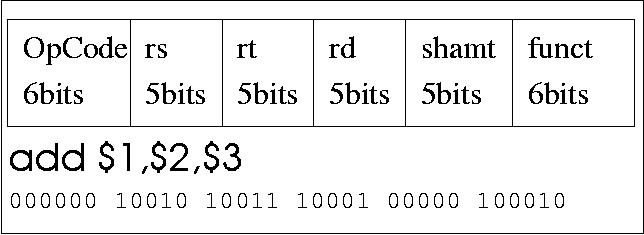

space的涵義在數學上或物理上，就是用了另一個參考基準點 (不同的參考座標系)，怎麼說呢，例如一個蘋果，我剛剛講的一個，這個 "一"這個數量是根據單位是完整的蘋果得來的，但是我也可以說是兩個 (半個蘋果)，相對的指的是同一件事情，但是2這個數字是根據單位是 半個蘋果得來的。物理上來說，由於一些 幾何的特性，我們會在(x,y,z)與(r,theta,phi)做轉換，線性數學上會比較 好處理(所以科學是很可憐的只能處理特定線性的世界)。相對的電腦裡 面由於保護的原因，它也有兩個space，在ELF的image中我們可以知道 0 ~ 3G的連續位址是User Space，3G~4G是kernel space。 user kernel間每次切換都要靠軟體中斷，而且如果有要處理的buffer 例如
char *string="string"; printf(string); |
當你用nm /bin/ls ldd /bin/ls看到的位址是函式庫的參照位址， 是Virtual Address，不是真的physical address 這其實是廢話，既然我們在user層次。virtual address 它會根據不同的硬體cache與cpu系統，有另一個轉換而有所不同（不同CPU的 cache定址和方式不一樣，OS必須配合這些。) 所以nm看到的address是只有特定的"平台"才懂， Solaris 與Linux的同一隻用gcc編出來的程式的虛擬位址架構是完全不同的。 不管怎樣，可以想像kernel與user的差異點在哪裡了。
所有user建立的執行檔都是user space，只有 OS kenrel的執行程式碼才是kernel space 程式碼。 當user程式想要存取電腦上重要資源時 抱歉不準，你放一隻病毒我format硬碟還得了， 因此都必須透過System Call這個系統提供的函式API來由kernel幫你做， 通常切換到kernel的是你的程式裡面呼叫了例如fork, open, read, write， 這時編譯器分析c程式碰到這些system call， 會先放個system call ID到暫存器， 例如
mov eax, 01 然後用 int 80 |
各個OS提供的System Call當然都不一樣，即使每家Unix like的都長很像甚至 很多system call 如read() write() fork()等等在使用者角度看都一樣 (這就是程式可攜性)，一號通常就是exit()這個system call，其實這要看系統的 設定，在Linux上定義在/usr/include/linux/asm/unistd.h，在Solaris上定義在 /usr/include/sys/syscall.h。但內部的編號或許不一樣，而實際運做的方式 當然更不一樣了。就像從台北到高雄目的地一樣到達方法卻很多種。
所以為什麼gcc可以做cross compiler呢?因為他知道每個cpu的指令的長相， 知道每個OS的要求，知道ELF的格式，它只是在建造出一個image而已。所以用 shell script也 能作出一個compiler，原理只要把該放的字串，該放的Byte長相，放進檔案就 可以了。 MIPS的 32 bit指令中如圖
Figure 4-4. MIPS指令

Cross Compiler通常要連binutils, glibc, gdb一起都要作cross platform 的重新編譯，通常是在configure時加--target=xxxx這樣的選項就可以了。